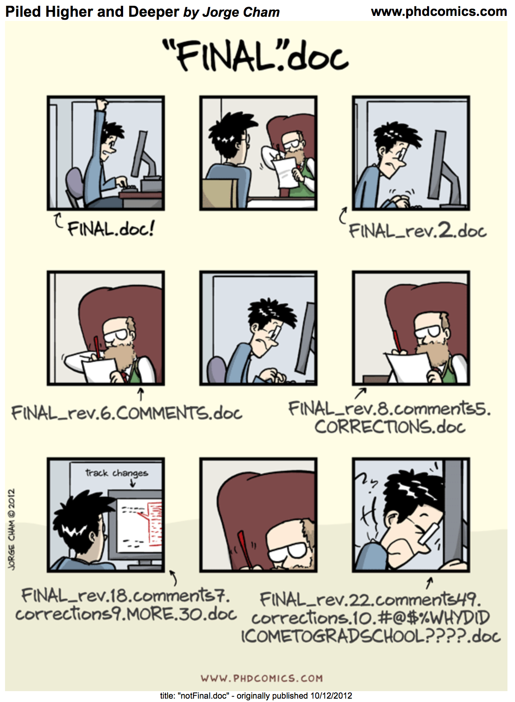

Module 2: Operational synthesis
Learning Objectives
After completing this module, you will be able to:
- Identify characteristics of reproducible coding / project organization
- Explain benefits of reproducibility (to your team and beyond)
- Summarize the advantages of creating a defined contribution workflow
- Define fundamental vocabulary of version control systems
- Create a repository on GitHub
- Explain how synthesis teams can use GitHub to collaborate more efficiently and reproducibly
Reproducibility Practices

Making one’s work “reproducible”–particularly in code contexts–has become increasingly popular but is not always clearly defined. For the purposes of this short course, we believe that reproducible work:
- Uses scripted workflows for all interactions with data
- Contains sufficient documentation for those outside of the project team to navigate the project’s contents
- Contains detailed metadata for all data products
- Allows anyone to recreate the entire workflow from start to finish
General Considerations
Estimated time: 10 min
Documentation
- One folder per project
- Further organize content via sub-folders
- Make file names informative and intuitive
- Avoid spaces and special characters in file names
- Follow a consistent naming convention throughout
- Use READMEs to record organization rules / explanation
Code
- Use a version control system
- Load libraries/packages explicitly
- Track (and document) software versions
- Namespace functions (if not already required by your coding language)
- Use relative file paths that are operating system-agnostic
- Balance how descriptive object names are with striving for concise names
- Use comments in the code!
- Consider custom functions
- For scripts that need to be run in order, consider adding step numbers to the file name
Contributing
- Create a formal plan for collaborating with which your whole team agrees
- Quarantine external inputs
- Plan for “future you”
- Communicate to your collaborators whenever you’re working on a specific script to avoid conflicting edits
Synthesis Considerations
Estimated time: 10 min
How does reproducibility in synthesis considerations differ from individual / non-synthesis applications?
- Judgement calls need to be made / agreed to as a group
- But “defer to the doers”
- Increased emphasis on contribution guidelines / planning being formalized
- More communication needs
- Must ensure that every team member has sufficient access to the project files
Version Control

Vocabulary
Estimated time: 5 min
Brief definitions for a selection of fundamental version control vocabulary terms
- Version control system: software that tracks iterative changes to your code and other files
- Repository: the specific folder/directory that is being tracked by a version control system
- Git: a popular open-source distributed version control system
- GitHub: a website that allows users to store their Git repositories online and share them with others
GitHub
Estimated time: 10 min
While this section of the module focuses on GitHub, there are several other viable alternatives for working with Git individually or as part of a larger team (e.g., GitLab, GitKraken, etc.). Any of these may be viable option for your team and we focus on GitHub here only to ensure a standard backdrop for the case studies we’ll discuss shortly.
There are a lot of GitHub tutorials that exist already so, rather than add our own variant to the list, we’ll work through part of one created by the Scientific Computing team of the National Center for Ecological Analysis and Synthesis (NCEAS).
See the workshop materials here.
Given the time restrictions for this short course, we’ll only cover how you engage with GitHub directly through the GitHub website. However, your chosen software for writing code will certainly have a method of connecting to GitHub/etc., so if this topic is of interest it will be beneficial for you to search out the relevant tutorial.
Synthesis Group Case Studies
Estimated time: 10 min
To make some of these concepts more tangible, let’s consider some case studies. The following tabs contain GitHub repositories for real teams that have engaged in synthesis research and chosen to preserve and maintain their scripts in GitHub. Each has different strengths and you may find that facets of each feel most appropriate for your group to adopt. There is no single “right” way of tackling this but hopefully parts of these exemplars inspire you.
Highlights:
- Straightforward & transparent numbering of workflow scripts
- Custom
.gitignoresafety net
Highlights:
- Really consistent file naming conventions & folder organization
- Active contribution to code base by all group members
Highlights:
- Separate repositories for each manuscript
- Nice use of README as pseudo-bookmarks for later reference to other repositories
For more information about LTER synthesis working groups and how you can get involved in one, click here.
Additional Resources
Courses, Workshops, and Tutorials
- Synthesis Skills for Early Career Researchers (SSECR) course. 2024. LTER Network Office
- Reproducible Approaches to Arctic Research Using R workshop. 2024. Arctic Data Center & NCEAS Learning Hub
- Collaborative Coding with GitHub workshop. 2024. NCEAS Scientific Computing team
- Coding in the Tidyverse workshop. 2023. NCEAS Scientific Computing team
- Shiny Apps for Sharing Science workshop. 2022. Lyon, N.J. et al.
- Ten Commandments for Good Data Management. 2016. McGill, B.
Literature
- Harrer, M. et al. Doing Meta-Analysis with R: A Hands-On Guide. 2023. GitHub
- Todd-Brown, K.E.O., et al. Reviews and Syntheses: The Promise of Big Diverse Soil Data, Moving Current Practices Towards Future Potential. 2022. Biogeosciences
- Borer, E.T. et al. Some Simple Guidelines for Effective Data Management. 2009. Ecological Society of America Bulletin